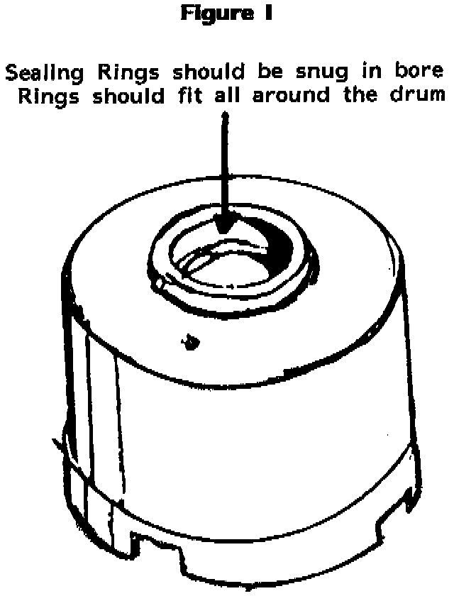
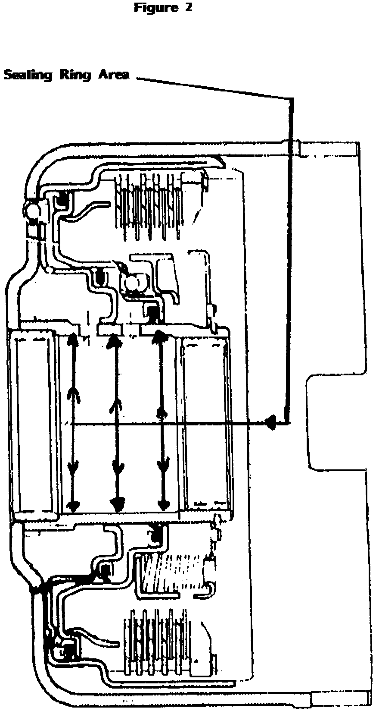

A/T - Slipping or No-Shift/Metal Sealing Rings
TSB 87-48 (Aug)SUBJECT: Metal sealing rings
Various Units
PROBLEM: Slipping, or sometimes no-shift
POSSIBLE SOLUTION: Sealing rings could be under-size.
1. Always inspect rings as outlined in SIL 84-29


2. Place ring in bore of drum where they will be running. (See Figures 1 & 2)
3. Sealing rings should be snug in bore; rings should fit all around the drum. (drum could be out-of-round)
4. Air check all drums. (Use 30 PSI air pressure only.) If air escapes you have leaks -- better find now, than later. This represents lost clutch pressure, and could result in soft application and burned friction material.
5. Following these steps will help you save money, plus help you build better units.